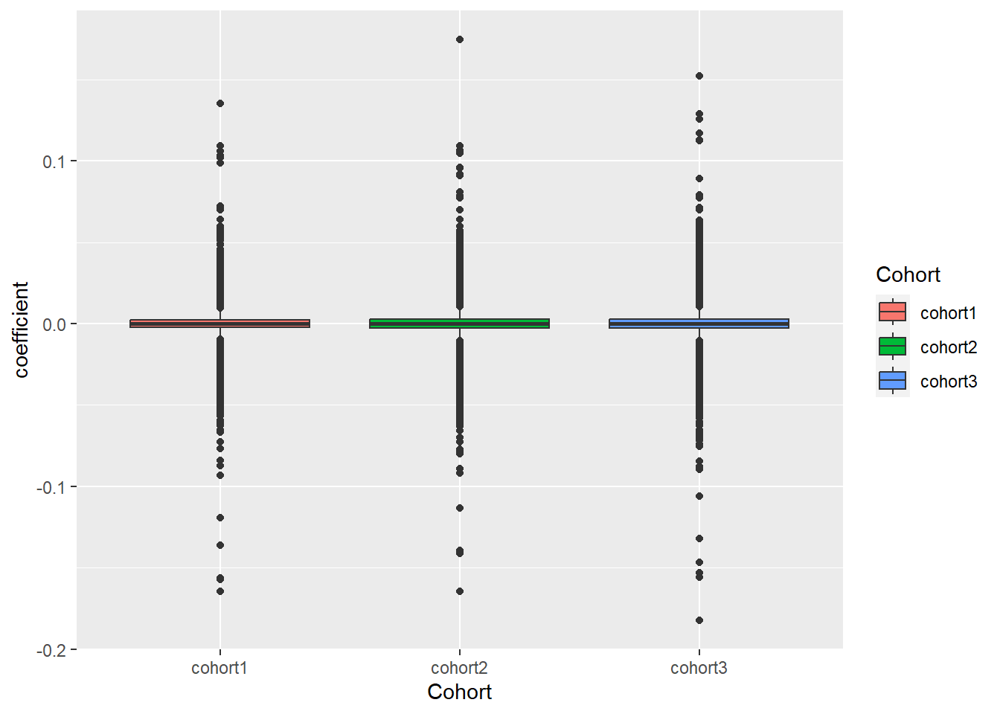
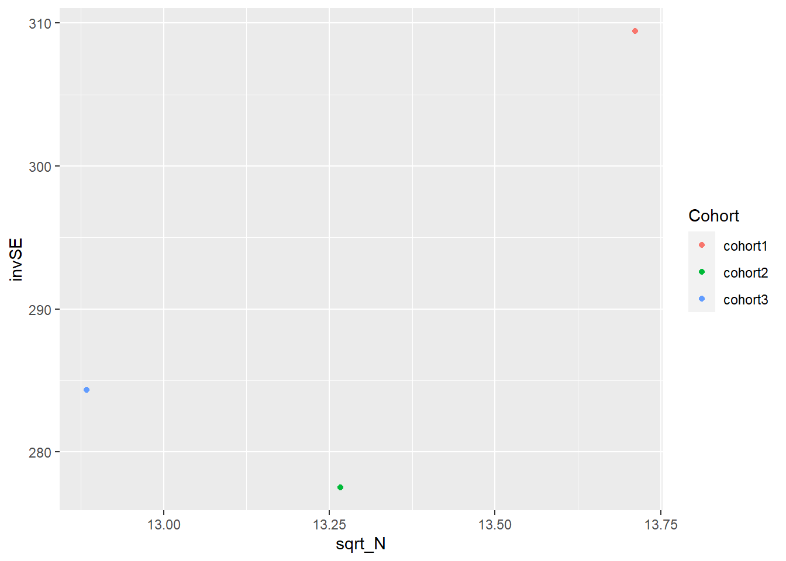
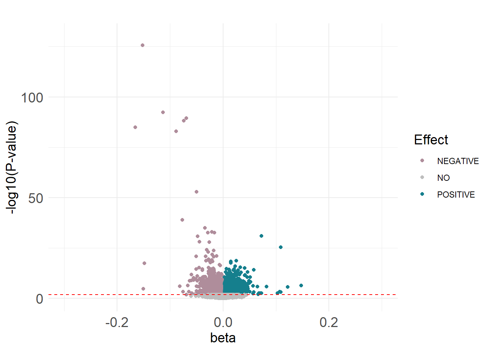
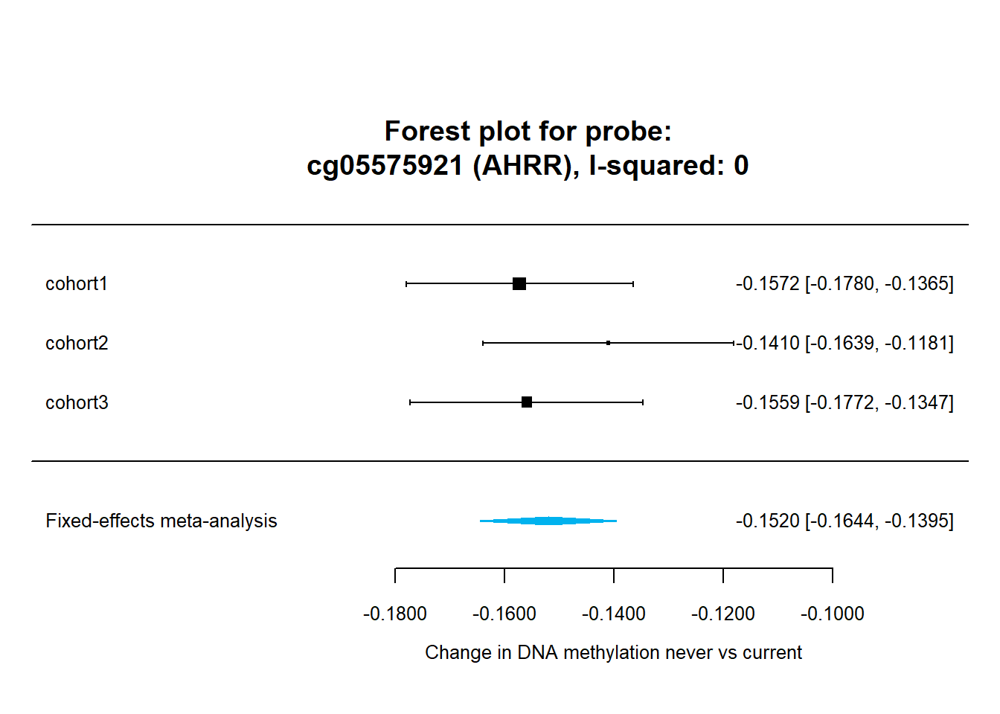

4 Meta-analysis of epigenome-wide association studies (metaEWAS)
In this chapter we will run a meta-analysis of epigenome-wide association studies (metaEWAS) A file with the slides can be downloaded here
At the end of the practice, please answer these questions:
- What does the precision plot show?
- How many FDR CpGs are associated with current smoking? and how many with former smoking?
- Which is the CpG with the lowest p-value for current smoking? Does it show increased or decreased methylation? Does it show heterogeneity across studies? Is the effect size of this CpG similar between current and never smokers and between former and never smokers?
4.2 Load EWAS results by cohort
Here we will show an example to run the metaEWAS testing never smokers against current smokers. Nevertheless, the same code can be applied to run other analyses testing never vs former. To do that, we would need to substitute all ‘current’ for ‘former’.
We begin loading the Never vs Current EWAS results from 3 cohorts: cohort1, cohort2 and cohort3.
EWASres.cohort1 <- read.table(file = "./data/DAY4/Input/Results.EWAS.cohort1.NeverVScurrent.txt",
sep=",",header = TRUE)
EWASres.cohort2 <- read.table(file = "./data/DAY4/Input/Results.EWAS.cohort2.NeverVScurrent.txt",
sep=",",header = TRUE)
EWASres.cohort3 <- read.table(file = "./data/DAY4/Input/Results.EWAS.cohort3.NeverVScurrent.txt",
sep=",",header = TRUE)4.3 Quality control of EWAS results from the different studies
Before running the metaEWAS, it is really important to check the quality of the EWAS results that we want to combine through a meta-analysis. This includes:
- examining inflation (lambda and QQplot)
- create a beta’s box plot
- create a precision plot
4.3.1 Lambda and qqplot
We look to the lambda and the QQplot to examine inflation
First, we will calculate the lambda for the 3 cohorts:
lambda.cohort1<- qchisq(median(EWASres.cohort1$p.value,na.rm=T), df = 1,
lower.tail = F)/qchisq(0.5, 1)
lambda.cohort2<- qchisq(median(EWASres.cohort2$p.value,na.rm=T), df = 1,
lower.tail = F)/qchisq(0.5, 1)
lambda.cohort3<- qchisq(median(EWASres.cohort3$p.value,na.rm=T), df = 1,
lower.tail = F)/qchisq(0.5, 1)
lambdas<-cbind(lambda.cohort1,lambda.cohort2,lambda.cohort3)
lambdas## lambda.cohort1 lambda.cohort2 lambda.cohort3
## [1,] 1.529736 1.468459 1.509258
write.table(lambdas,"./data/DAY4/Output/Lambdas.NeverVScurrent.txt",sep=",")Then, we will create a QQplot for each of the 3 cohorts:
#cohort 1
pvals.cohort1<-EWASres.cohort1$p.value
qq(pvals.cohort1,main=("QQPlot EWAS cohort 1 smoking Never VS Current"))
#cohort 2
pvals.cohort2<-EWASres.cohort2$p.value
qq(pvals.cohort2,main=("QQPlot EWAS cohort 2 smoking Never VS Current"))
#cohort 3
pvals.cohort3<-EWASres.cohort3$p.value
qq(pvals.cohort3,main=("QQPlot EWAS cohort 3 smoking Never VS Current")) {kind=link}
{kind=link}
{kind=link}
4.3.2 Box plot
First, we will prepare a dataframe with the coefficient (beta) information of the 3 cohorts.
#create df for Box plot
QCPlot_cohort1<-EWASres.cohort1[,c("probeID","coefficient")]
QCPlot_cohort1$Cohort<-"cohort1"
head(QCPlot_cohort1)
QCPlot_cohort2<-EWASres.cohort2[,c("probeID","coefficient")]
QCPlot_cohort2$Cohort<-"cohort2"
head(QCPlot_cohort2)
QCPlot_cohort3<-EWASres.cohort3[,c("probeID","coefficient")]
QCPlot_cohort3$Cohort<-"cohort3"
head(QCPlot_cohort3)
QCPlot.df<-rbind(QCPlot_cohort1,QCPlot_cohort2,QCPlot_cohort3)Then, we will plot a Beta’s Box plot to compare the results from the 3 cohorts
p1<-ggplot(data=QCPlot.df,aes(x=Cohort, y=coefficient, fill=Cohort)) +
geom_boxplot()
p1 The boxplot can be found here
{kind=link}
4.3.3 Precision plot
First, we will prepare a dataframe including the inverse SE (1 divided by the median of the effect SE) and the square root of the sample size for each cohort.
invSE_cohort1<-1/median(EWASres.cohort1$coefficient.se)
invSE_cohort2<-1/median(EWASres.cohort2$coefficient.se)
invSE_cohort3<-1/median(EWASres.cohort3$coefficient.se)
precision <- data.frame(
Cohort = c("cohort1","cohort2","cohort3"),
N = c(188, 176, 166),
invSE= c(invSE_cohort1,invSE_cohort2,invSE_cohort3))
precision$sqrt_N<-sqrt(precision$N)
head(precision)Then, we will plot the precision plot of 1/median(SE) against square root of the sample size (N) for each cohort
p2<-ggplot(data=precision,aes(x=sqrt_N, y=invSE, color=Cohort)) + geom_point()
p2 The precision plot can be found here
{kind=link}
4.4 MetaEWAS: Statistical methods to combine results from different studies
We will combine the EWAS results through a fixed-effect weight meta-analysis using Metafor R package
4.4.1 Data preparation
We want to create a dataframe merging the EWAS results from the 3 cohorts (probeID, coefficient, se, p.value, n)
First, we subset the EWAS results to probeID, coefficient, se .p.value and n and we change the name of the column in order to merge these results in a dataframe
EWASres.cohort1<-EWASres.cohort1[,c("probeID","coefficient",
"coefficient.se","p.value","n")]
EWASres.cohort2<-EWASres.cohort2[,c("probeID","coefficient",
"coefficient.se","p.value","n")]
EWASres.cohort3<-EWASres.cohort3[,c("probeID","coefficient",
"coefficient.se","p.value","n")]
names(EWASres.cohort1)<- c("probe", "coef_cohort1", "se_cohort1",
"P_VAL_cohort1", "N_for_probe_cohort1")
names(EWASres.cohort2)<- c("probe", "coef_cohort2", "se_cohort2",
"P_VAL_cohort2", "N_for_probe_cohort2")
names(EWASres.cohort3)<- c("probe", "coef_cohort3", "se_cohort3",
"P_VAL_cohort3", "N_for_probe_cohort3")Second, we merge the EWAS results from the 3 cohorts
dat <- merge(EWASres.cohort1, EWASres.cohort2, by="probe", all.x=TRUE, all.y=TRUE)
dat <- merge(dat, EWASres.cohort3, by="probe", all.x=TRUE, all.y=TRUE)
dim(dat)## [1] 37842 13
head(dat)Then, we create a new column with the total N of the metaEWAS and remove those probes present in <50% of the cohorts
dat$N <- rowSums(dat[,c("N_for_probe_cohort1", "N_for_probe_cohort2",
"N_for_probe_cohort3")], na.rm=TRUE)
totN = sum(max(dat$N_for_probe_cohort1, na.rm=TRUE),
max(dat$N_for_probe_cohort2, na.rm=TRUE),
max(dat$N_for_probe_cohort3, na.rm=TRUE))
datN <- dat[,c("probe", "N_for_probe_cohort1", "N_for_probe_cohort2",
"N_for_probe_cohort3")]
datN <- datN[which(rowMeans(!is.na(datN[-1]))>=0.5),]
dat <- dat[which(dat$probe %in% datN$probe),]
dat<-dat[which(dat$N >= totN/2),]
dat <- droplevels(dat)
studies <- c("cohort1","cohort2","cohort3")
head(dat)4.4.2 Run fixed effect meta-analysis
Load the functions for the metaEWAS
fixed.effects.meta.analysis() function
fixed.effects.meta.analysis <- function(list.of.studies,data){
require(metafor)
coefs = data[,c("probe",paste0("coef_",list.of.studies))]
ses = data[,c("probe",paste0("se_",list.of.studies))]
require(reshape)
coefs = melt(coefs)
coefs = cbind(coefs, colsplit(coefs$variable, "_", names = c("var", "study")))
coefs <- coefs[,c("probe","study","value")]
names(coefs) <- c("probe","study","coef")
ses = melt(ses)
data.long = cbind(coefs,ses[,"value"])
names(data.long)<-c("probe","study","coef","se")
res = split(data.long, f=data$probe)
res = lapply(res, function(x) rma.uni(slab=x$study,
yi=x$coef,sei=x$se,method="FE",
weighted=TRUE))
res
}extract.and.merge.meta.analysis() function
extract.and.merge.meta.analysis <-function(meta.res,data){
require(plyr)
data.meta = ldply(lapply(meta.res, function(x) unlist(c(x$b[[1]],x[c("se","pval","QE","QEp","I2","H2")]))))
colnames(data.meta)<-c("probe","coef.fe","se.fe","p.fe","q.fe","het.p.fe","i2.fe","h2.fe")
data = merge(data,data.meta,by="probe",all.x=T)
data
}To run the Never vs Current metaEWAS, we will use the above functions (without edition)
-
fixed.effects.meta.analysis()function:- list.of.studies: vector with the name of the studies that we want to meta-analyse
- data: dataframe created above with the EWAS results of the cohorts that we want to meta-analyse
-
extract.and.merge.meta.analysis()function:- meta.res: the output from the meta-analysis
- data: the dataframe with the EWAS results of the cohorts that we want to meta-analyse
Then, we will correct for multiple testing (FDR) using p.adjust() function
meta.results.current <- fixed.effects.meta.analysis(list.of.studies = studies,
data = dat)## Using probe as id variables## Warning in type.convert.default(as.character(x)): 'as.is' should be specified by the caller; using
## TRUE
## Warning in type.convert.default(as.character(x)): 'as.is' should be specified by the caller; using
## TRUE## Using probe as id variables
dat.current <- extract.and.merge.meta.analysis(meta.res = meta.results.current,
data = dat)
dat.current$fdr<-p.adjust(dat.current$p.fe, method = "fdr")
head(dat.current)4.4.3 Explore the results
The metaEWAS results contain:
- probe
- coef, se, p.value and N from the cohorts included in the metaEWAS
- N: total N of the metaEWAS
- coef.fe: coefficient of the association of the metaEWAS
- se.fe: standard error of the coefficient of the association of the metaEWAS
- p.fe: p.value of the metaEWAS
- i2.fe: We calculated the I2 statistic to explore heterogeneity across cohorts
- fdr: p-value after correcting for multiple testing (FDR)
We order the results by the metaEWAS p.value
## [1] 37842 22
write.table(dat.current.ord, "./data/DAY4/Output/MA.Smoking.NeverVScurrent.txt")Significant hits
Our results were corrected for multiple testing using FDR method. Significance was defined at FDR p-value < 0.05.
sig.current<-dat.current.ord[dat.current.ord$fdr <0.05,]
dim(sig.current)## [1] 8194 22
head(sig.current)
write.table(sig.current,
"./data/DAY4/Output/MA.Smoking.NeverVScurrent.FDRsig.txt")4.4.4 Lambda and QQplot
lambda.current<- qchisq(median(dat.current.ord$p.fe,na.rm=T),
df = 1, lower.tail = F)/qchisq(0.5, 1)
lambda.current ## [1] 4.196554
pvals.current<-dat.current.ord$p.fe
qq(pvals.current,main=("QQPlot metaEWAS smoking Never VS Current")) The QQPlot plot can be found here
{kind=link}
4.4.5 Volcano plot
dat.current.ord$diffexpressed <- "NO"
dat.current.ord$diffexpressed[dat.current.ord$coef.fe > 0 & dat.current.ord$fdr <0.05] <- "POSITIVE"
dat.current.ord$diffexpressed[dat.current.ord$coef.fe < 0 & dat.current.ord$fdr <0.05] <- "NEGATIVE"
p <- ggplot(data=dat.current.ord, aes(x=dat.current.ord$coef.fe, y=-log10(dat.current.ord$p.fe), col=dat.current.ord$diffexpressed)) +
xlim(c(-0.3,0.3))+ ylim(c(0,130)) +
geom_point(size = 1.5) + theme_minimal() +
labs(title = " ", x = "beta", y = "-log10(P-value)", colour = "Effect") +
theme(axis.title = element_text(family = "Helvetica", size = 14, color = "black",vjust=0.5)) +
theme(plot.title = element_text(family = "Helvetica",size=14,face="bold",color="black", hjust= 0.5, vjust=0.5)) +
theme(legend.title = element_text(family = "Helvetica", color = "black", size = 14))
p2 <- p + geom_hline(yintercept=c(-log10(0.012)), col=c("red"),linetype = "dashed") +
theme(axis.text = element_text(size = 14))
mycolors<-c("#157F8D","#AF8D9B", "grey")
names(mycolors) <- c("POSITIVE", "NEGATIVE", "NO")
p3 <- p2 + scale_colour_manual(values = mycolors)
p3 The volcano plot can be found here
{kind=link}
4.4.6 Forest plot
We will create a forest plot with our metaEWAS results and the cohort EWAS results for a specific CpG site. Today we will select our top significant CpG “cg05575921” that is annotated to AHRR gene and it is well known for its association with tabbacco.
#Forest plots
X<-"cg05575921"
G<-"AHRR"
I2<-dat.current.ord[dat.current.ord$probe=="cg05575921", "i2.fe"]
forest(meta.results.current$cg05575921,digits=4,
xlab=expression(paste("Change in DNA methylation never vs current")),
mlab="Fixed-effects meta-analysis",col="deepskyblue2",border="deepskyblue2",cex=0.8)
title(paste0("Forest plot for probe:\n",X," (",G,"), I-squared: ",I2,""),line=-2) The forest plot can be found here
{kind=link}